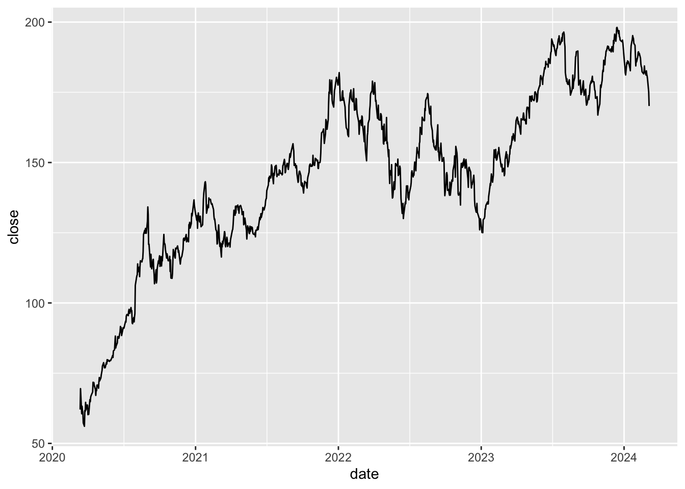
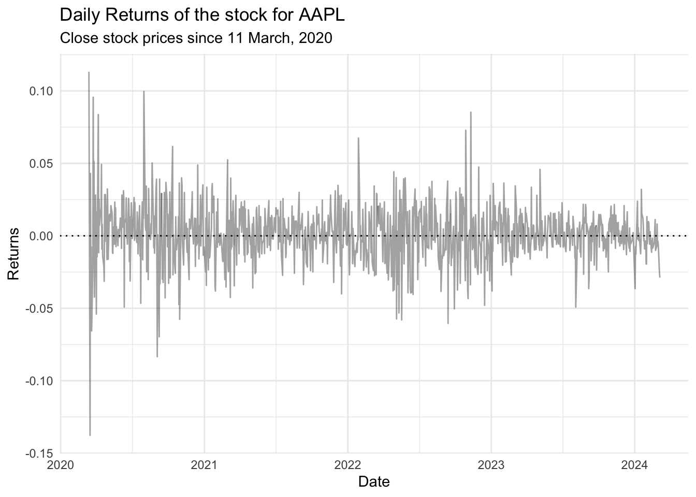

3 Understanding the data
3.1 Visualise
With this data and the functions in
ggplot(), we can create a first visualisation of the closing stock price (close).We set the dates on the
xaxis and thecloseprice in theyaxis.
3.2 Transform
The visualisation offers a first glance. We can transform again to ask the questions on the returns.
Remember that the difference in log-price are approximations of the returns, i.e. the percentage gain after selling the stock.
Definition 3.1 Let \(p_t\) denote the closing price of the stock, the log-return \(r_t\) can be defined as: \[ r_t = \log(p_t) - \log(p_{t-1}) \approx \frac{p_t - p_{t-1}}{p_{t-1}} \tag{3.1}\]
- We use the function
mutate(), alongsidelag()to create a column with the daily (log) returns and the definition in equation Definition 3.1
3.3 Visualize again: log-returns
We can construct a visualisation with this. Additionally, we can add layers to our visualisation to decorate it at will.
company_data |>
ggplot(aes(x = date))+
geom_line(aes(y = daily_log_returns), alpha = 0.5, color = "#555555") +
geom_hline(yintercept = 0, lty = 3)+
labs(
title = str_glue("Daily Returns of the stock for {company_ticker}"),
subtitle = str_glue("Close stock prices since {start_date |> format('%d %B, %Y')}"),
x = "Date",
y = "Returns"
) +
theme_minimal()Warning: Removed 1 row containing missing values or values outside the scale range
(`geom_line()`).

Look at the years!
What can you say about this plot?
It appears that there is a high variability of the log-returns in the year 2020
This increase in variance seems to stabilise in 2021 and reappear in 2022
The year 2023 is also quite stable
All these point to signs of increased variability in times of global crises, which have added elements of uncertainty to the global supply chain.
3.4 Model: Create summary statistics
We can obtain a summary table for some summary statistics with
summarise().We will compute the average return \(\bar{r}\) and estimate the standard deviation (SD) of the log-returns \(\hat{\sigma}\)
Definition 3.2 These statistics are defined as follows:
\[\begin{align} \bar{r} &= \frac{1}{T}\sum_{t=1}^T r_t\\ \hat{\sigma} &= \sqrt{\frac{1}{T-1}\sum_{t=1}^T \left(r_t - \bar{r}\right)^2} \end{align}\]
A word of warning
While the average return might not mean much in theoretical terms, the standard deviation might give some idea of the risk or volatility.
- We can show the values in the following table:
company_data |>
summarise(`Average Return` = mean(daily_log_returns, na.rm = TRUE),
`Average Risk (SD)` = sd(daily_log_returns, na.rm = TRUE)) |>
gt() |>
tab_header(
title= "Summary statistics of Tech companies stocks",
subtitle = str_glue("From {start_date |> format('%d %b, %Y')} to {Sys.Date() |> format('%d %b, %Y')}")) |>
fmt_number(decimals = 4)| Summary statistics of Tech companies stocks | |
|---|---|
| From 11 Mar, 2020 to 05 Mar, 2024 | |
| Average Return | Average Risk (SD) |
| 0.0010 | 0.0200 |
3.4.1 Summary statistics by year
And, seeing that the visualisation shows periods of high volatility in the year 2020, we can compute yearly measures of risk and volatility:
company_data |>
mutate(year = year(date)) |>
group_by(year) |>
summarise(`Average Return` = mean(daily_log_returns, na.rm = TRUE),
`Risk (SD)` = sd(daily_log_returns, na.rm = TRUE)) |>
gt() |>
tab_header(
title= "Summary statistics of Tech companies stocks",
subtitle = str_glue("From {start_date |> format('%d %b, %Y')} to {Sys.Date() |> format('%d %b, %Y')}")) |>
fmt_number(columns = -year, decimals = 4) |>
tab_style(
style = list(
cell_fill(color = "lightgreen"),
cell_text(color = "white")),
locations =
cells_body(columns = `Average Return`,
rows= `Average Return` >0)
) |>
tab_style(
style = list(
cell_fill(color = "red"),
cell_text(color = "white")),
locations =
cells_body(columns = `Risk (SD)`,
rows= `Risk (SD)` >0.020)
)| Summary statistics of Tech companies stocks | ||
|---|---|---|
| From 11 Mar, 2020 to 05 Mar, 2024 | ||
| year | Average Return | Risk (SD) |
| 2020 | 0.0037 | 0.0283 |
| 2021 | 0.0012 | 0.0158 |
| 2022 | −0.0012 | 0.0224 |
| 2023 | 0.0016 | 0.0128 |
| 2024 | −0.0022 | 0.0123 |
Look at the years (again)!
We’re highlighting the years where the risk is higher. These numbers reflect the remarks we’ve made in the previous points, namely that global uncertainties have affected the risk of this stock.